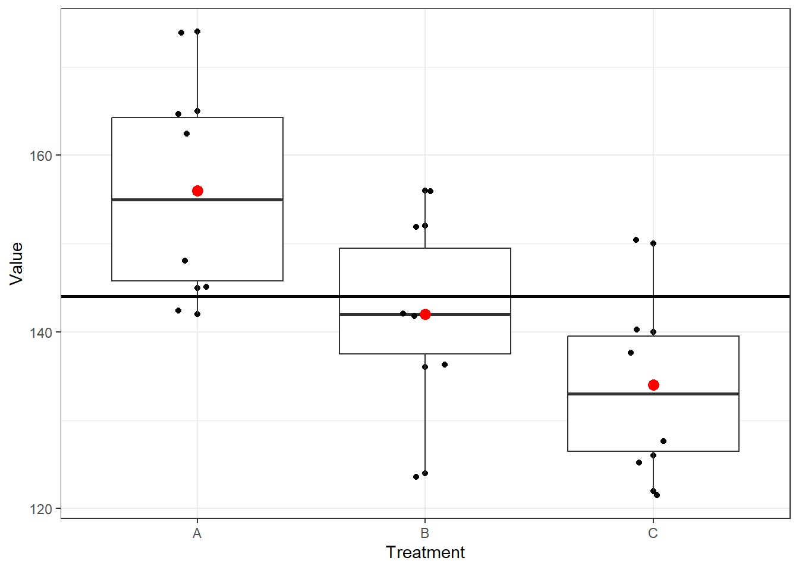

| Treatment | Value |
|---|---|
| A | 162 |
| A | 142 |
| A | 165 |
| A | 145 |
| A | 148 |
| A | 174 |
| B | 142 |
| B | 156 |
| B | 124 |
| B | 142 |
| B | 136 |
| B | 152 |
| C | 126 |
| C | 122 |
| C | 138 |
| C | 140 |
| C | 150 |
| C | 128 |
11 Analysis of Variance
The one-way analysis of variance, in particular, is used to test whether or not the averages from several different situations (AKA Treatments) are significantly different from one another.
This is the simplest kind of analysis of variance. Although more complex situations require more complicated calculations, the general ANOVA idea remains the same: to test significance by comparing one source of variability (the one being tested) against another source of variability (the underlying randomness of the situation).
The \(F\) test for the one-way analysis of variance will tell you whether the averages of several independent samples are significantly different from one another.
11.1 Sources of Variation for a One-Way Analysis of Variance
- Between-sample variability (from one sample to another).
- Within-sample variability (inside each sample).
11.2 Assumptions for a One-Way Analysis of Variance
For each population, the response variable is normally distributed.
The variance of the response variable, denoted \(\sigma^2\), is the same for all of the populations.
The observations must be independent.
11.3 Hypotheses for a One-Way Analysis of Variance
Hypothesis \[ H_0: \mu_1=\mu_2=...=\mu_k (The \ \ population \ \ means\ \ are \ \ equal) \] \[ H_a: At \ \ least \ \ TWO \ \ population \ \ means\ \ are \ \ NOT\ \ equal \]
11.4 Sample statistics used in one-way ANOVA
Total sample size, \(n_T=n_1+n_2+...+n_k\)
Overall sample mean, \[\overline {\overline x} =\frac{n_1 \overline x_1+n_2 \overline x_2+...+n_k \overline x_k}{n_T} \] If, \(n_1=n_2=...=n_k=n(say)\) then
\[\overline {\overline x} =\frac{\overline x_1+\overline x_2+...+ \overline x_k}{k} \ \ (why?) \]
11.5 The Between-Sample Variability for One-Way Analysis of Variance
Between-sample variability AKA MSTR(mean square due to treatments):
\[ MSTR=\frac{n_1 (\overline x_1-\overline {\overline x} \ \ )^2 +n_2 (\overline x_2-\overline {\overline x} \ \ )^2+...+n_k (\overline x_k-\overline {\overline x} \ \ )^2}{k-1} \]
11.6 The Within-Sample Variability for One-Way Analysis of Variance
Within-sample variability AKA MSE (mean square due to error ):
\[ MSE=\frac{(n_1-1)s_1^2+(n_2-1)s_2^2+...+(n_k-1)s_k^2}{n_T-k} \]
11.7 The F Statistic
\[ F=\frac{Between \ \ sample\ \ variability }{Within \ \ sample\ \ variability}=\frac{MSTR}{MSE} \]
- The test statistic follows an \(F\)-distribution with \(df_1=k-1\) degrees of freedom in the numerator and \(df_2=n_T- k\) degrees of freedom in the denominator.
11.8 Rejection rule
- Reject \(H_0\) if \(F \ge F_\alpha\).
11.9 Example 12.1
The following data are from a completely randomized design.
| Treatment | ||
|---|---|---|
| A | B | C |
| 162 | 142 | 126 |
| 142 | 156 | 122 |
| 165 | 124 | 138 |
| 145 | 142 | 140 |
| 148 | 136 | 150 |
| 174 | 152 | 128 |
Sample data in long/tidy format
Now we see how the “Values” are distributed for 3 different Treatments.

Question
At the \(\alpha=0.05\) level of significance, test whether the means for the three treatments are equal.
Solution
- Hypothesis \[ H_0: \mu_1=\mu_2=\mu_3 (The \ \ population \ \ means\ \ are \ \ equal) \] \[ H_a: At \ \ least \ \ TWO \ \ population \ \ means\ \ are \ \ NOT\ \ equal \]
- Treatment-wise sample mean and sample variance
| Treatment | Sample size | Sample mean | Sample varience |
|---|---|---|---|
| A | 6 | 156 | 164.4 |
| B | 6 | 142 | 131.2 |
| C | 6 | 134 | 110.4 |
- Overall mean:
\[\overline {\overline x} =\frac{\overline x_1+\overline x_2+...+ \overline x_k}{k}=\frac{156+142+134}{3}=144 \]
MSTR: Since, \(n_1=n_2=n_3=n=6\) so, \[ MSTR=\frac{n[\ \ (\overline x_1-\overline {\overline x} )^2+(\overline x_2-\overline {\overline x} )^2+(\overline x_3-\overline {\overline x} )^2]}{k-1} \] \[ =\frac{6[(156-144)^2+(142-144)^2+(134-144)^2]}{3-1}=744 \]
MSE: Since, \(n_1=n_2=n_3=n=6\) so, \[ MSE=\frac{(n-1)s_1^2+(n-1)s_2^2+(n-1)s_3^2}{n_T-k} \] \[ =\frac{(n-1)[s_1^2+s_2^2+s_3^2]}{n_T-k}=\frac{(6-1)[164.4+131.2+110.4]}{18-3}=135.33 \]
\(F\)-statistic:
\[ F=\frac{MSTR}{MSE}=\frac{744}{135.33}=5.4978\approx5.50 \]
- Critical value
At \(\alpha =0.05\) and for \(df_1=2 \ \ and \ \ df_2=15\), \(F_\alpha=3.68\)
- Decision
Since \(F>F_\alpha\) so reject \(H_0\).
- Conclusion
So, the equality of 3 means claim is rejected. Hence, at least TWO of the means are not equal.
11.10 Multiple comparison
Rejection of the null hypothesis (\(k\) population means are equal) in one-way ANOVA suggests that at least 2 population means are not equal. To investigate further which means are significantly differs we conduct multiple comparison test. In this section we will introduce Fisher’s Least significant difference (LSD) method, then we discuss Bonferroni Adjustment to LSD Method.
Fisher’s LSD method
We define the LSD as
\[ LSD=t_{\alpha/2} \sqrt {MSE \left (\frac{1}{n_i}+\frac{1}{n_j} \right)} \ \ ; i\ne j=1,2,...,k \]
We conclude that \(\mu_i\ne \mu_j\) if \(|\bar x_i-\bar x_j|>LSD\).
Bonferroni Adjustment to LSD Method
To control the Type I error rate, we adjust the \(\alpha\) as follows:
\[ \alpha=\frac{\alpha_E}{C} \]
Where, \(\alpha_E\) is the experiment-wise Type I error (that is given default)
\(C =\binom {k}{2}\), the number of pairs to be compared.
Based on update \(\alpha\) we take \(t_{\alpha/2}\) and compute LSD.
11.11 Example 12.2
11.11.1 One-way ANOVA in R
ANOVA table
| Source of variation | df | SSTR | MSTR | F-statistic | p-value |
|---|---|---|---|---|---|
| Treatment | 2 | 1488 | 744.000 | 5.498 | 0.016 |
| Residuals | 15 | 2030 | 135.333 | NA | NA |
Since \(p\)-value \(< \alpha\) so, reject \(H_0\).
Therefore the equality of 3 means claim is rejected. Hence, at least TWO of the means are not equal.
Homework
- “Does the height of the shelf affect daily sales of dog food?”. To answer this question daily sales data were collected where dog foods were randomly allocated in three different height of shelves in 8 days.
| Shelf Height | ||
|---|---|---|
| Knee Level | Waist Level | Eye Level |
| 77 | 88 | 85 |
| 82 | 94 | 85 |
| 86 | 93 | 87 |
| 78 | 90 | 81 |
| 81 | 91 | 80 |
| 86 | 94 | 79 |
| 77 | 90 | 87 |
| 81 | 87 | 93 |
(a) Based on the data, is there a significant difference in the average daily sales of this dog food based on shelf height? Use a 0.01 level of significance.
(b) If null hypothesis is rejected in (a) then conduct a multiple comparison test using Fisher LSD.
- Many college and university students obtain summer jobs. A statistics professor wanted to determine whether students in different degree programs earn different amounts. A random sample of 5 students in the BA, BSc, and BBA programs were asked to report what they earned the previous summer. The results (in $1,000s) are listed here.
Can the professor infer at the 5% significance level that students in different degree programs differ in their summer earnings?
| B.A. | B.Sc. | B.B.A. |
|---|---|---|
| 3.3 | 3.9 | 4.0 |
| 2.5 | 5.1 | 6.2 |
| 4.6 | 3.9 | 6.3 |
| 5.4 | 6.2 | 5.9 |
| 3.9 | 4.8 | 6.4 |
- Perform a one-way ANOVA to determine whether there is a significant difference in the mean ages of the workers at the three plants. Use \(\alpha = 0.01\) and note that the sample sizes are equal.
| Plant | Age | ||||
|---|---|---|---|---|---|
| Plant 1 | 29 | 27 | 30 | 27 | 28 |
| Plant 2 | 32 | 33 | 31 | 34 | 30 |
| Plant 3 | 25 | 24 | 24 | 25 | 26 |
- A corporation is trying to decide which of three makes of automobile to order for its fleet—domestic, Japanese, or European. Five cars of each type were ordered, and, after 10,000 miles of driving, the operating cost per mile of each was assessed. The accompanying results in cents per mile were obtained.
| Domestic | Japanese | European |
|---|---|---|
| 18.0 | 20.1 | 19.3 |
| 15.6 | 15.6 | 15.4 |
| 15.4 | 16.1 | 15.1 |
| 19.1 | 15.3 | 18.6 |
| 16.9 | 15.4 | 16.1 |
a. Prepare the analysis of variance table for these data.
b. Test the null hypothesis that the population mean operating costs per mile are the same for these three types of car. Use \(\alpha=0.01\) .
c. Conduct Fisher’s LSD pairwise comparison if applicable.